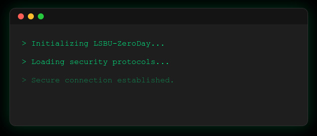

Design Placement Portfolio
Hi, I’m Md Riad
Computer Science Student Exploring UX, Product Design and Digital Experiences
I am a Computer Science student with a growing interest in UX, UI and product design. I enjoy solving problems, understanding user needs and creating digital experiences that are clear, useful and engaging.
User-Centred Problem Solver
Interested in UX, interface design, design thinking and building digital experiences that are accessible, simple and meaningful for users.
About Me
A brief introduction to who I am and what I want to build.
I am Md Riad, a BSc (Hons) Computer Science student at London South Bank University. My background in technology has helped me develop a strong interest in how digital products are designed, how users interact with them, and how better experiences can be created through thoughtful design.
I enjoy combining problem solving, creativity and technology. I am particularly interested in UX design, user research, interface design and building clear and accessible digital experiences. I am now looking to grow these skills further through a placement where I can learn from experienced designers and contribute to real products.
Skills
A combination of technical, creative and collaborative skills I am developing.
Design & UX
- Figma wireframing and layout planning
- Interest in UX and interface design
- User-centred thinking
- Designing simple and accessible digital experiences
Technical
- HTML, CSS and JavaScript
- Responsive web design
- Python and frontend development
- Git and GitHub
Professional
- Teamwork and communication
- Presentation and collaboration
- Adaptability and curiosity
- Attention to detail
Design Interests
Areas of design and product thinking that I am most excited to develop.
UX Design
I enjoy thinking about how users move through digital products and how experiences can feel smoother and more intuitive.
Interface Design
I am interested in clean layouts, strong visual hierarchy and designing interfaces that are modern, simple and accessible.
User Research
I want to improve my ability to understand user needs, ask better questions and turn insights into useful design decisions.
Projects
Projects that reflect my interest in technology, interface design and problem solving.
Portfolio Website
Designed and developed this one-page portfolio to present my skills and projects in a clear and structured way. I focused on layout, readability and creating a professional user experience.
Focus: UI design, layout, branding

ZeroDay Linktree Collaboration
Contributed to the ZeroDay Linktree website, focusing on how information is structured and presented clearly for users. This project helped me think about usability, accessibility and clean digital presentation.
Focus: Collaboration, digital design, presentation
View ProjectPresentation Design Samples
Designed presentation slides using Canva for academic and society-related work. I focused on layout, visual hierarchy and clear communication of ideas to an audience. This helped me develop my ability to present information in a structured and engaging way.
Focus: Communication, layout, storytelling
View SlidesBaby Monitor System
Built a baby monitor project as part of my operating systems coursework. This project helped me think about how technology can support users through reliable and practical solutions.
Focus: Problem solving, user needs
Future UX Case Study
I am currently planning to create a design case study showing my process from identifying a user problem to wireframing, interface design and reflection.
Focus: UX process, research, iteration
Student Society Digital Promotion
Through my involvement with student activities and ZeroDay, I have contributed to event communication and promotional ideas that support engagement and community participation.
Focus: Engagement, teamwork, communication
Experience
Experiences that helped me build teamwork, communication and leadership skills.
Founding Member and Event Coordinator
LSBU ZeroDay
2025 - Present
Helped establish a cybersecurity society at LSBU as part of a six-member team. I support event planning, coordination and delivery, helping create engaging events for students.
CSI Student Ambassador
London South Bank University
2025 - Present
Represented the School of Computer Science and Informatics at university open days and took part in team-based and independent projects, helping strengthen my communication, teamwork and presentation skills.
Commis Waiter
Los Mochis
2025 - Present
Developed strong customer service, communication and attention to detail in a fast-paced environment.
Warehouse Picker & Packer
Evri
2025
Built discipline, accuracy and the ability to work efficiently within structured processes.
Education
My academic background and relevant learning.
BSc (Hons) Computer Science
Building a strong foundation in programming, systems, software development and digital problem solving, while growing my interest in design and user experience.
Online Learning & Self-Study
I have continued learning beyond the classroom through online courses and self-study, including programming, design exploration and practical project work.
Contact
Feel free to reach out for placement opportunities, collaboration or a conversation.
- Email: md.riad.cs@gmail.com
- LinkedIn: linkedin.com/in/enthusiastsrd
- GitHub: github.com/CopyProgrammer
Note: This portfolio is a growing reflection of my work, interests and learning journey. I am actively developing my skills in UX, product thinking and digital design alongside my Computer Science studies.